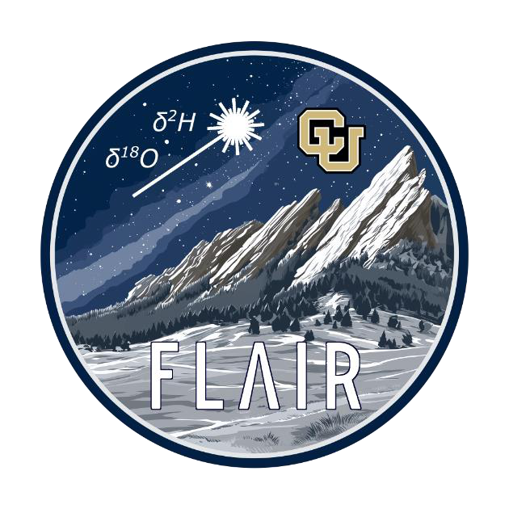

Projects
A closer look at the work.
Select a mission logo to explore its science, technical development and supporting materials.
Colorado Space Grant Consortium (COSGC)
Lunar exploration
GLEE→
Deployment mechanisms · Electronics
University of Colorado Boulder
Heliophysics mission concept
HUNTER→
Instrumentation · Science implementation
Institute of Arctic and Alpine Research (INSTAAR)

Airborne isotope research
FLAIR→
Payload electronics · Integration
University of Colorado Boulder
Graduate projects
CU Boulder→
Celestial mechanics · Attitude dynamics